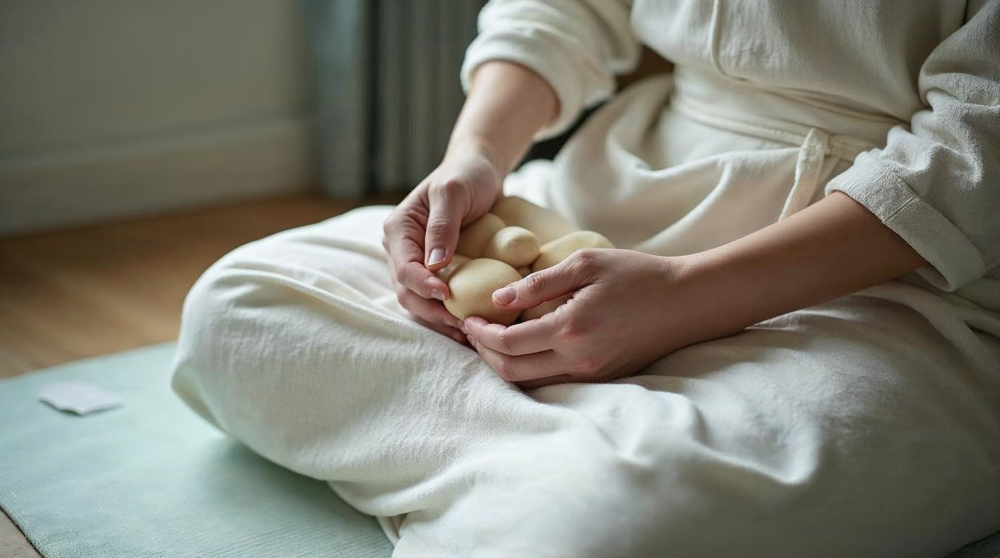
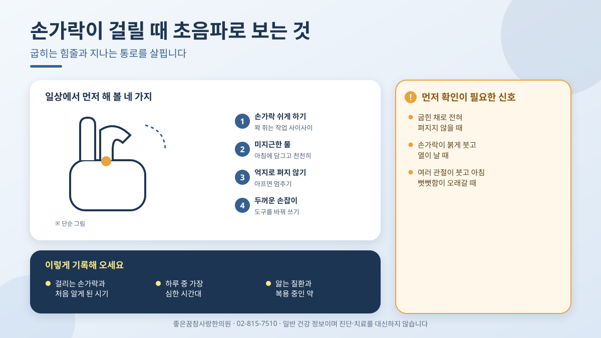

이종호 한의사 감수좋은꿈참사랑한의원 대표원장 (한의사 면허번호 19769)발행 2026-11-23 · 수정 2026-11-26
이 글의 차례
- 왜 이런 불편이 생길 수 있나요
- 손가락 걸림은 어떤 흐름으로 이어질 수 있나요?
- 먼저 이렇게 여쭙니다
- 일상에서 먼저 해 볼 수 있는 것
- 상황별 예시
- 스스로 점검해 보세요
- 왜 아침에 더 뻣뻣하게 걸릴까요
- 손 쓰는 습관은 어떻게 바꿔 볼까요?
- 초음파 화면에서는 어떻게 보나요?
- 집에서 손가락을 움직일 때는요?
- 걸리는 손가락이 여러 개라면요?
- 침과 약침은 언제 함께 생각하나요?
- 일하는 자리에서는 무엇을 바꿔 볼까요?
- 다음 진료까지 무엇을 지켜보면 좋을까요?
- 한의원에서 함께 살필 수 있는 경우
- 첫 방문은 이렇게 진행됩니다
- 얼마나 지켜보고 언제 상담할까요
- 이렇게 기록해 오시면 상담이 쉬워집니다
- 이런 증상은 먼저 확인이 필요합니다
- 관련 글
손가락을 굽혔다 펼 때 걸리는 느낌이 있으면 초음파로 손바닥 쪽 손가락 뿌리에서 굽히는 힘줄과 그 힘줄이 지나는 통로가 두꺼워졌는지 살펴볼 수 있습니다. 아침에 손가락이 잘 펴지지 않다가 억지로 펴면 '딸깍' 소리가 난다는 분들이 있습니다. 요리, 가위질, 운전처럼 손을 꽉 쥐는 일이 많은 분에게서 자주 듣습니다.
걸림은 대개 손바닥 쪽 손가락 뿌리에서 생기는데, 정작 아픈 곳은 손가락 가운데 마디처럼 느껴진다는 분도 있습니다. 그래서 어느 손가락이 언제 걸리는지, 걸릴 때 어디를 누르면 아픈지부터 함께 찾고, 필요할 때 초음파로 손가락을 움직이며 힘줄이 지나가는 모습을 확인합니다.
왜 이런 불편이 생길 수 있나요
- 손가락을 굽히는 힘줄은 손바닥 쪽 고리 모양의 조직 아래를 지나는데, 이 부위가 두꺼워지거나 힘줄이 부으면 미끄러지다 걸릴 수 있습니다.
- 손을 꽉 쥐는 일이 반복되면 같은 자리에 마찰이 쌓일 수 있습니다.
- 밤사이 움직이지 않다가 아침에 처음 쓸 때 더 뻣뻣하게 걸린다는 분이 많습니다.
- 엄지와 약지에서 자주 보이지만 어느 손가락에나 생길 수 있고, 한 손에 여러 손가락이 함께 걸리기도 합니다.
- 손가락 마디 자체가 붓고 아픈 관절 문제와 힘줄이 걸리는 문제는 살피는 곳이 달라 구분해서 봅니다.
- 당뇨처럼 몸 상태와 관련해 나타나는 경우도 있다고 알려져 있어 함께 여쭙습니다.
손가락 걸림은 어떤 흐름으로 이어질 수 있나요?
손가락 걸림은 처음부터 딸깍 소리가 나기보다 조금씩 단계를 밟아 가는 경우가 많습니다. 지금 어느 단계에 가까운지에 따라 생활에서 바꿀 것과 진찰에서 살필 것이 달라져, 첫 진찰 때 함께 짚어 봅니다.
- 처음: 손바닥 쪽 손가락 뿌리가 뻐근하고, 아침에 손가락이 조금 뻣뻣하지만 걸리지는 않습니다.
- 다음: 굽혔다 펼 때 딸깍 걸리지만 스스로 힘을 주면 펴집니다.
- 그다음: 걸린 손가락을 다른 손으로 펴 줘야 할 때가 생깁니다.
- 더 진행되면: 손가락이 굽힌 채로 잘 펴지지 않거나, 반대로 끝까지 굽혀지지 않습니다.
앞쪽 단계일수록 손 쓰는 습관을 바꾸는 것만으로도 걸림의 느낌이 달라지는지 지켜볼 여지가 큽니다. 뒤쪽 단계로 넘어가는 흐름이 보이면 진찰을 서두르시길 권합니다.
먼저 이렇게 여쭙니다
- 어느 손가락이 걸리나요?
- 아침에 더 심한가요?
- 손바닥 쪽 손가락 뿌리를 누르면 아프거나 작은 멍울이 만져지나요?
- 손을 꽉 쥐는 일을 오래 하시나요?
- 당뇨나 갑상선 질환이 있나요?
일상에서 먼저 해 볼 수 있는 것
- 꽉 쥐는 작업 사이에 손가락을 쉬게 하기
- 아침에 미지근한 물에 손을 담그고 천천히 움직이기
- 걸린 손가락을 억지로 세게 펴지 않기
- 손잡이가 두꺼운 도구 쓰기
- 운전할 때 장갑을 끼거나 핸들 커버로 손잡이를 두껍게 해 꽉 쥐는 힘 줄이기
상황별 예시
- 예를 들어 칼질과 국자질을 오래 하는 분이 아침마다 중지가 굽은 채 걸렸다가 딸깍 펴지는 경우라면, 손잡이가 두꺼운 도구로 바꾸고 재료 손질 사이에 손을 펴고 쉬는 시간을 넣어 봅니다. 아침에는 미지근한 물에 손을 담근 뒤 천천히 움직입니다.
- 예를 들어 하루 종일 운전대를 쥐는 일을 하는 분이라면, 신호를 기다릴 때마다 손을 펴서 쉬고 장갑으로 손잡이를 두껍게 해 꽉 쥐는 힘을 줄여 봅니다.
- 예를 들어 당뇨가 있는 어르신의 여러 손가락에 걸림이 생긴 경우에는 요즘 혈당 관리 상태를 함께 여쭙고, 필요하면 원내 당화혈색소 검사기로 혈당 흐름을 함께 확인합니다.
스스로 점검해 보세요
- 손가락을 굽혔다 펼 때 딸깍 걸리거나 튕기듯 펴진다.
- 아침 첫 사용 때 더 뻣뻣하고 자주 걸린다.
- 손바닥 쪽 손가락 뿌리를 누르면 아프거나 작은 멍울이 만져진다.
- 걸린 손가락을 다른 손으로 펴 줘야 할 때가 있다.
- 칼질, 가위질, 운전대나 공구 쥐기처럼 손을 꽉 쥐는 일을 하루 몇 시간씩 한다.
- 걸리는 손가락이 하나에서 둘 이상으로 늘었다.
- 당뇨나 류마티스 관절염 같은 질환이 있다.
왜 아침에 더 뻣뻣하게 걸릴까요
밤사이 손가락을 거의 움직이지 않으면 힘줄과 그 통로 주변이 굳고, 손이 조금 붓기도 합니다. 그 상태에서 아침에 처음 주먹을 쥐었다 펴면 두꺼워진 자리에서 힘줄이 걸리기 쉬워 딸깍 소리가 더 잘 납니다.
손을 꽉 쥔 채 자는 습관이 있거나, 전날 칼질이나 운전으로 손을 오래 쥐고 있었다면 다음 날 아침 걸림이 더 심하게 느껴지는 경우가 많습니다. 반대로 손을 몇 번 움직이고 난 낮에는 덜 걸리는 경우도 있어, 아침과 낮의 차이를 함께 봅니다.
그래서 아침에 걸리는 횟수는 그 전날 손을 얼마나 썼는지와 함께 보면 흐름이 잘 보입니다. 기록할 때 전날 손을 많이 쓴 일을 한 줄 덧붙여 주세요.
손 쓰는 습관은 어떻게 바꿔 볼까요?
- 물건을 들 때 손가락 끝으로 꼬집듯 쥐지 말고 손바닥 전체로 받쳐 듭니다.
- 장바구니 손잡이를 손가락에 걸어 오래 들지 말고 팔뚝이나 어깨에 겁니다.
- 가위, 칼, 공구는 손잡이가 굵고 부드러운 것을 고르거나 손잡이에 감는 테이프로 두껍게 만듭니다.
- 휴대폰을 한 손으로 쥐고 오래 보지 말고 거치대를 씁니다.
모든 습관을 한 번에 바꾸기는 어렵습니다. 하루 중 손을 가장 오래 꽉 쥐는 장면 하나를 골라 그것부터 바꿔 보시고, 그 뒤로 아침 걸림이 어떻게 달라졌는지 적어 오세요.
초음파 화면에서는 어떻게 보나요?
필요하다고 판단되면 손바닥 쪽 손가락 뿌리에 젤을 바르고 탐촉자를 댑니다. 손가락을 굽히는 힘줄과 그 위를 감싸는 고리 모양 조직의 두께를 보고, 필요하면 걸리지 않는 손가락이나 반대쪽 손의 같은 손가락과 견주어 봅니다.
화면을 보는 동안 손가락을 천천히 굽혔다 펴 보시게 하면 힘줄이 고리 아래를 지나가는 모습과 걸리는 지점을 함께 볼 수 있습니다. 힘줄 주변에 물이 고였는지도 확인합니다.
화면에서 보이는 모습은 손으로 짚어 본 소견, 걸리는 횟수, 생활 이야기와 함께 놓고 판단하는 참고입니다. 보이는 두께만으로 결론을 내리지 않고, 다음 방문 때 같은 방법으로 다시 비교합니다.
집에서 손가락을 움직일 때는요?
- 통증이 없는 범위 안에서만 움직이고, 걸리는 지점에서 억지로 넘기지 않습니다.
- 손바닥을 책상에 대고 손가락을 하나씩 들어 올렸다 내리는 동작을 가볍게 해 봅니다.
- 손가락 뿌리의 아픈 자리를 세게 문지르거나 누르지 않습니다.
움직인 뒤 걸림이나 통증이 더 심해졌다면 그 동작은 멈추고 다음 진료 때 말씀해 주세요. 어느 동작을 몇 번 했는지 적어 오시면 강도를 함께 맞출 수 있습니다.
걸리는 손가락이 여러 개라면요?
한 손에서 여러 손가락이 함께 걸리거나 양손에 모두 생긴다면, 손 쓰는 습관과 함께 몸 상태를 더 자세히 여쭙습니다. 당뇨가 있는지, 요즘 혈당 관리가 어떤지, 갑상선 질환이나 류마티스 관절염 진단을 받은 적이 있는지를 확인합니다.
이런 질환이 있다면 다니시는 병원의 치료는 그대로 이어 가시고, 한의원에서는 손 쓰는 습관과 손 주변의 불편을 함께 살핍니다.
침과 약침은 언제 함께 생각하나요?
손가락이 걸리는 분은 손바닥과 팔뚝 근육이 함께 굳어 있는 경우가 많습니다. 칼질이나 운전처럼 손을 오래 쥐는 일을 하면 팔뚝 안쪽이 단단하게 뭉치기도 해, 진찰 뒤 침으로 손과 팔뚝 주변을 함께 살핍니다.
걸리는 자리의 상태에 따라 약침을 검토할 수 있습니다. 어떤 방법을 쓸지, 얼마 간격으로 이어 갈지는 진찰 뒤 함께 정하고, 다음 방문 때 아침 걸림이 어땠는지 들으며 다시 의논합니다.
일하는 자리에서는 무엇을 바꿔 볼까요?
- 운전을 오래 한다면 핸들을 손가락 끝으로 움켜쥐기보다 손바닥으로 감싸 쥡니다.
- 미용, 원예처럼 가위를 많이 쓴다면 손잡이 구멍이 넉넉한 가위를 고르고 엄지와 약지에 힘이 몰리지 않게 번갈아 씁니다.
- 공구를 자주 쓴다면 장갑으로 손잡이를 두껍게 하고, 같은 공구를 오래 쓰지 않게 작업 순서를 바꿉니다.
일을 쉬기 어렵다는 분이 대부분이라, 일을 줄이기보다 쥐는 방식과 쉬는 순서를 바꾸는 쪽부터 함께 찾습니다. 어떤 도구를 하루에 몇 시간 쓰는지 알려 주시면 더 구체적으로 이야기할 수 있습니다.
다음 진료까지 무엇을 지켜보면 좋을까요?
아침에 처음 걸리는 횟수, 다른 손으로 펴 줘야 했던 횟수, 걸릴 때 통증의 정도를 매일 같은 시간에 적어 보세요. 이 세 가지가 함께 줄어드는지, 하나만 달라지는지에 따라 다음에 바꿀 것이 달라집니다.
기록을 보며 습관을 바꾼 뒤에도 세 가지가 그대로라면, 진찰에서 손가락 상태를 다시 살피고 방법을 바꿀지 함께 이야기합니다. 걸리는 손가락이 새로 생겼다면 그 손가락과 날짜도 꼭 덧붙여 적어 주세요. 손가락마다 따로 적으면 어느 손가락부터 달라지는지 보기 쉽습니다.
한의원에서 함께 살필 수 있는 경우
- 손가락 걸림이 이어지는 경우 필요하다고 판단되면 초음파로 힘줄 주변을 확인합니다.
- 손을 쓰는 습관을 함께 살피고 필요하면 침 등을 이어서 씁니다.
- 마디가 붓는 관절 쪽 불편이 함께 있는지도 손으로 짚어 확인합니다.

첫 방문은 이렇게 진행됩니다
- 맥 짚기와 혀·배 살피기: 모든 분의 맥을 먼저 짚고, 맥을 짚으면서 피로와 잠, 손발의 온기까지 몸 전체 상태를 여쭙습니다. 필요하면 혀와 배도 봅니다.
- 이야기 듣기: 걸리는 손가락과 처음 알게 된 시기, 가장 심한 시간대, 손을 꽉 쥐는 일의 종류, 앓고 있는 질환과 약을 충분히 듣습니다.
- 손 살피기: 손가락을 직접 굽혔다 펴 보며 걸리는 지점을 찾고, 필요하다고 판단될 때 초음파로 손가락을 움직이며 힘줄과 고리 모양 조직의 두께, 힘줄이 지나가는 모습을 함께 봅니다.
- 방향 정하기: 침, 약침 가운데 상태에 맞는 방법과 바꿔 볼 손 쓰는 습관을 정합니다.
- 다음 방문: 지난번 걸리던 손가락이 아침에 어땠는지, 걸리는 손가락 수가 달라졌는지 이어서 여쭙고 같은 동작으로 다시 비교합니다.
약침을 검토할 때는 약물·음식 알레르기, 혈액을 묽게 하는 약, 당뇨·간·신장 질환, 임신 가능성을 먼저 알려 주세요. 복용 중인 약은 처방한 의사와 상의 없이 줄이거나 끊지 않습니다.
얼마나 지켜보고 언제 상담할까요
- 꽉 쥐는 작업 사이 쉬기, 손잡이가 두꺼운 도구, 아침 미지근한 물 습관을 2~3주 이어 가며 아침에 걸리는 횟수를 적어 봅니다.
- 2~3주가 지나도 걸림이 그대로이거나, 걸리는 손가락이 늘거나, 걸릴 때 통증이 커지면 상담을 받아 보세요.
- 걸린 손가락을 다른 손으로 펴 줘야 하는 날이 잦아지면 기다리지 말고 확인합니다.
이렇게 기록해 오시면 상담이 쉬워집니다
- 걸리는 손가락과 처음 알게 된 시기
- 하루 중 가장 심한 시간대
- 손을 꽉 쥐는 일의 종류와 하루 시간
- 앓고 있는 질환과 복용 중인 약
손이 걸려도 일과 살림은 멈출 수 없다는 것, 잘 알고 있습니다. 다음에 오시면 그사이 아침에 몇 번 걸렸는지, 바꿔 본 습관 가운데 무엇이 어려웠는지부터 여쭙겠습니다.
이런 증상은 먼저 확인이 필요합니다
- 손가락이 붉게 붓고 열이 나거나, 베이거나 찔린 뒤 손가락 전체가 고르게 붓고 살짝 펴기만 해도 심하게 아픈 경우
- 손가락이 굽힌 채로 전혀 펴지지 않는 경우
이런 신호가 있으면 한의원보다 가까운 병원이나 응급실을 먼저 찾으세요.
관련 글

여쭙는 것
- 어느 손가락이 걸리나요?
- 아침에 더 심한가요?
- 손바닥 쪽 손가락 뿌리를 누르면 아프거나 작은 멍울이 만져지나요?
생활에서 해 볼 것
- 꽉 쥐는 작업 사이에 손가락을 쉬게 하기
- 아침에 미지근한 물에 손을 담그고 천천히 움직이기
- 걸린 손가락을 억지로 세게 펴지 않기
한의원에서 함께 살필 것
- 손가락 걸림이 이어지는 경우 필요하다고 판단되면 초음파로 힘줄 주변을 확인합니다.
- 손을 쓰는 습관을 함께 살피고 필요하면 침 등을 이어서 씁니다.
- 마디가 붓는 관절 쪽 불편이 함께 있는지도 손으로 짚어 확인합니다.
먼저 확인이 필요한 신호
- 손가락이 붉게 붓고 열이 나거나, 베이거나 찔린 뒤 손가락 전체가 고르게 붓고 살짝…
- 손가락이 굽힌 채로 전혀 펴지지 않는 경우
한눈에 보는 표
| 구분 | 핵심 |
|---|---|
| 여쭙는 것 | 어느 손가락이 걸리나요? 아침에 더 심한가요? |
| 생활에서 해 볼 것 | 꽉 쥐는 작업 사이에 손가락을 쉬게 하기 아침에 미지근한 물에 손을 담그고 천천히 움직이기 |
| 한의원에서 함께 살필 것 | 손가락 걸림이 이어지는 경우 필요하다고 판단되면 초음파로 힘줄 주변을 확인합니다. 손을 쓰는 습관을 함께 살피고 필요하면 침 등을 이어서 씁니다. |
| 먼저 확인이 필요한 신호 | 손가락이 붉게 붓고 열이 나거나, 베이거나 찔린 뒤 손가락 전체가 고르게 붓고 살짝 펴기만 해도 심하게 아픈 경우 손가락이 굽힌 채로 전혀 펴지지 않는 경우 |
자주 묻는 질문
초음파로 걸리는 모습을 볼 수 있나요?
손가락을 움직이며 힘줄이 지나가는 모습을 함께 보기도 합니다.
딸깍거릴 때마다 일부러 펴 주면 좋은가요?
억지로 세게 펴면 더 예민해질 수 있습니다. 천천히 움직이고, 아프면 멈추는 것이 좋습니다.
엄지도 걸릴 수 있나요?
네. 엄지는 걸림이 자주 생기는 손가락 가운데 하나입니다. 엄지 뿌리 손바닥 쪽을 누르면 아프거나 딸깍거린다면 함께 살펴봅니다.
손가락 마디가 붓고 아픈 것과는 어떻게 다른가요?
걸림은 손바닥 쪽 손가락 뿌리에서 힘줄이 미끄러지다 걸리는 것이고, 마디가 붓고 아픈 것은 관절 쪽 문제일 수 있습니다. 여러 마디가 함께 붓고 아침 뻣뻣함이 오래가면 류마티스 질환 등의 확인이 필요해 병원 검사를 안내합니다.
좋은꿈참사랑한의원은 재진 때 지난번 이야기부터 이어서 여쭙니다. 진료시간과 예약은 오시는 길에서 확인하세요.
어디서 상담받을 수 있나요?
좋은꿈참사랑한의원은 서울 동작구 만양로2길 2 신성빌딩 3층·5층(서울 동작구 상도동, 7호선 상도역 3번 출구 근처)에 있습니다. 한의사 3명(이종호 대표원장, 조영기 수석진료원장, 정원영 진료원장)이 진료합니다. 진료시간은 평일 09:30~20:00(점심 13:00~14:00), 토·일·공휴일 09:30~15:00이며, 방문 전 전화로 확인을 권합니다. 예약은 네이버 예약, 카카오톡 상담, 전화 02-815-7510로 받습니다.
이 글은 일반적인 건강 정보이며 개인의 진단이나 치료를 대신하지 않습니다. 증상이 있거나 복용 중인 약이 있다면 진료를 통해 확인하세요. 치료 효과는 개인마다 다를 수 있습니다.
작성 기준: 일반적으로 알려져 있는 건강 정보를 참고해 정리했습니다(대표원장 감수). 증상 기록은 1~2주 동안 하루 1회, 비슷한 시간에 적어 오시면 지난 상태와 비교하기 쉽습니다.